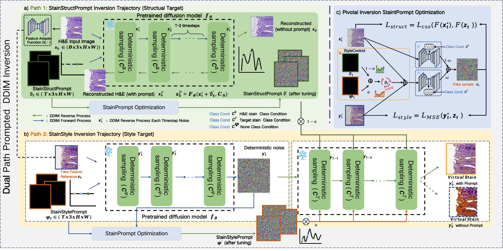

Bing(Baird) XiongMaster Student
ShenZhen Institues of Advanced Technology(SIAT) |
|


Short Bio
I am a second-year Master student of CS at The ShenZhen Institues of Advanced Technology (SIAT), under the supervision of Prof. Wenjian Qin. I obtained my B.Eng in Computer Science at Wuhan University of Technology in 2023. Currently, I am a research intern at Deepwise, supervised by Dr. Zhen Zhou and Prof.YiZhou Yu(IEEE Fellow) .
My research interests lie in the intersection of Computer Vision and Machine Learning. From 2022, I started to do some research on digital pathology and medical imaging. Now, I focus on designing novel applications for three dimension hitopathology reconstruction and medical image imaging and downstream task and virtual staining.
Feel free to contact me by email if you are interested in discussing or collaborating with me.
News
- [01/2025] Recipient of SIAT Instrument Cheif Innovation Fund Scholarship - Student Award
- [01/2025] Recipient of SIAT 2024 Outstanding Student Scholarship - Grade 1
- [12/2024] Recipient of the SIAT 2024 Excellent Student Cadre Award
- [12/2024] Joined Deepwise Research as research intern. Started doing research on Medical Imaging !
- [12/2024] One paper are accepted by AAAI 2025 !
- [4/2024] One paper are accepted by Displays !
Industrial Experience

|
Deepwise AI Lab Dec. 2024 - April.2025, Deepwise AI Lab, Beijing, China worked with Dr. Zhen Zhou and Prof.YiZhou Yu(IEEE Fellow) Topic: CT/PET Image Synthesis&Translation |
Education & Visiting

|
University of Chinese Academy of Sciences, China Master of Computer Science Advisor: Prof.Wenjian Qin Sep. 2023 - Future
|
|
|
University of Chinese Academy of Sciences, China Research Assistant in Multimodal Intelligent Laboratory, SIAT, CAS (MixLab@SIAT) Advisor: Prof. Wenjian Qin and Prof. YaoQin Xie Nov. 2022 - Aug. 2023
|

|
Wuhan University of technology, China Bachelor of Intelligent Manufacturing Engineering Sep. 2019 - Jun. 2023
|
Selected Publications | Full List
| /*Conference*/ | |
|  |
Unpaired Multi-Domain Histopathology Virtual Staining using Dual Path Prompted Inversion Bing Xiong, Yue Peng,Ranran Zhang,Fuqiang Chen, JiaYe He,Wenjian Qin The 39th Annual AAAI Conference on Artificial Intelligence (AAAI2025), CCFA |
Selected Honors & Awards
-
[05/2025] Recipient of Universty of Chinese Academy of Sciences Model Student of Outstanding Capacity
（中国科学院大学（UCAS）三好学生标兵，9 Students in the Institute）
-
[01/2025] Recipient of SIAT excellent student cadre
（深圳先进技术研究院（SIAT）优秀学生干部，22 Students in the Institute）
-
[01/2025] Recipient of SIAT Institute of Scientific Instrumentation Cheif Innovation Fund Scholarship - Student Award
（深圳先进技术研究院（SIAT）仪器所所长创新基金奖学金-优秀学生奖，1 Master Students in the Institute）
-
[01/2025] Recipient of SIAT Outstanding Student Scholarship - Grade 1
（深圳先进技术研究院（SIAT）优秀学生一等奖学金，10 Master Students in the Institue,SIAT）
-
[11/2024] UCAS 2024 Postgraduate Academic Forum Bay Area Forum Excellence Award
（中国科学院大学 2024 年研究生学术论坛（湾区论坛）优秀奖，8 Students in the Institue,SIAT）
-
[11/2024] National Scholarship of Shenzhen Institutes of Advanced Technology, UCAS
（中国科学院大学深圳先进技术研究院国家奖学金，Top 0.3% in ShenZhen Institute of Advanced Technology ）
-
[06/2023] Outstanding Undergraduate extracurricular training student of Wuhan University of Technology
（武汉理工大学本科生课外优秀训练学生）
-
[06/2023] Outstanding graduates of Wuhan University of Technology
（武汉理工大学优秀毕业生）
-
[12/2022] PaddleClub Gold Medal Team Leader of Baidu
（百度飞桨领航团 金牌团长）
-
[12/2022] PaddlePaddle Excellent open source project in Aistudio of Baidu
（百度 PaddlePaddle年度峰会 优秀开源项目）
-
[12/2022] PaddlePaddle Aistudio Top 10 Most Influential People of Baidu, only 10 developers in the world admitted to this program
（入选百度 PaddlePaddle Aistudio2022年 十大最具影响力开发者）
-
[12/2022] Second Prize in the National Finals of the National College Student Software Design Competition
（全软件设计大赛智能遥感解译赛道全国总决赛二等奖）
-
[08/2022] National Second Prize, Provincial First and Third Prize in the National College Student Smart Car Competition
（全国大学生智能车竞赛国家二等奖、省一等奖和三等奖）
-
[07/2022] National Second Prize in the National College Student Energy Conservation&Emission Reduction Innovation Competition
（全国大学生节能减排创新大赛国家二等奖）
-
[04/2022] PaddlePaddle Developer Expert (PPDE) of Baidu
（被授予百度 PaddlePaddle 开发者专家（PPDE）称号）
Invited Talk
-
2024.9.22 Talk at China Biomedical Engineering Conference & Medical Innovation Summit(BME2024)
Professional Services
-
Jounral Reviewer:
The International Journal of Research on Intelligent Systems for Real Life Complex Problems (Applied Intelligence)
-
Conference Reviewer:
International Joint Conference on Artificial Intelligence (IJCAI 2025)
Neural Information Processing Systems (NeurIPS 2024)
European Conference on Artificial Intelligence (ECAI 2025)